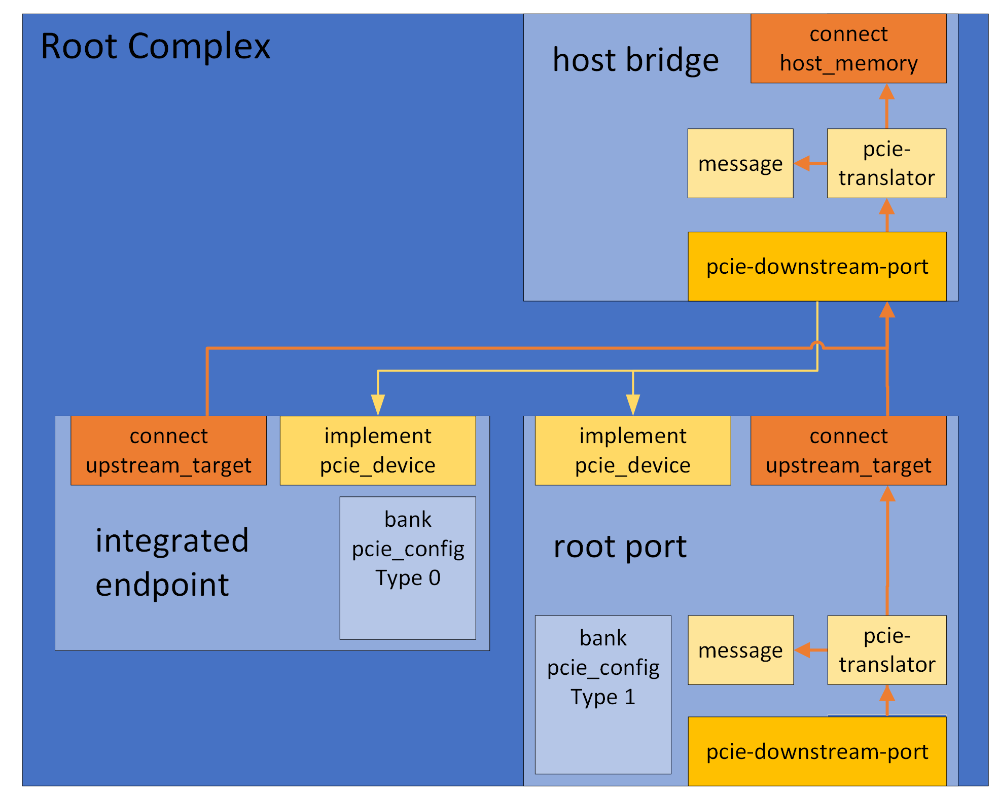

Simics provides a set of DML templates to assist in writing models for
PCIe compliant devices. The templates are available in
[simics]/src/devices/dml-lib/pcie/.
A typical endpoint device would use the pcie_endpoint
template. This template defines the pcie_config register bank which
simulates a Type 0 Configuration header. It also defines a connect for
the upstream target, implements the required interfaces, and handles the
mapping of resources defined in any base address registers.
The configuration header of a PCIe device is a register bank,
typically named pcie_config, which uses the template
physical_config_bank. A register bank would normally
not instantiate this template directly, but use either of
type_0_bank or type_1_bank instead. An
endpoint that uses the pcie_endpoint template automatically gets a
bank pcie_config which is an instance of the
type_0_bank template. All instances of
physical_config_bank will be mapped in the
configuration space of the upstream port when the device is connected,
and all base address registers in the bank will be mapped in the
appropriate address space, according to the type. If more than one
instance of physical_config_bank exists in the same device,
i.e. when simulating a multi-function-device, they must be separated
by assigning different values to the parameter function. Sample code
for a simple multi-function endpoint is available in the quick-start
Multi-Function Endpoint section.
The pcie_config bank defines the registers vendor_id, device_id
and class_code. An endpoint must assign init values for these,
according to the specification of the hardware that is to be
simulated. Sample code for setting Vendor ID, Device ID and Class Code
is available in the quick-start Endpoint section.
Depending on the device to be modeled, the init value for other
registers might also need to be customized.
PCIe defines optional "Capabilities" and "Extended
Capabilities". These are available as templates, configurable by
parameters. The templates are designed to be applied on groups, and
all templates require the parameters base and next_ptr to be
defined. The base parameter defines the address of the first
register in the capability structure. The next_ptr defines the base
address of the first address in the next capability structure (or zero
if this is the last capability). For example, the
Endpoint in the quick-start section has the
Subsystem ID (SSID) and Message Signaled Interrupts (MSI) capabilities
defined
Note that except where explicitly noted, the capability templates just define the registers and fields from the PCIe specification. The actual functionality must then be implemented by the device code. See DML Template Reference for more details.
An endpoint typically defines at least one base address register. In
Simics these are declared by creating registers in the bank that
corresponds to the configuration header (typically pcie_config).
The base address registers must use one of the base address templates,
for example the memory_base_address. The
Endpoint in the quick-start section defines two
Memory Base Address registers, bar0 and bar2. Each of them is tied
to a register bank that will be mapped when the Memory Space Enable
bit in the Command register is written as '1'.
There are a number of different templates that can be used to simulate base address registers, and they can be customized using various parameters. These are described in the Common Templates section of this document.
Endpoints can send legacy interrupts using the
raise_legacy_interrupt and lower_legacy_interrupt methods in the
pcie_config bank. If the Endpoint has MSI or MSI-X capability, it
can use the appropriate Capabilities template implement this and
send message signalled interrupts by using the raise method in the
group using the msi_capability or msix_capability template. The
Endpoint in the quick-start section, for example,
has MSI capability and raises MSI vector 0 when the intr register in
app0 is written.
Simics PCIe uses the transaction_t data type for all
transactions. The config_bank template provides utility
methods for reading and writing to the PCIe memory space. These
methods reside in the group memory and operate on the
upstream_target. Details are available in the
Memory methods section of this document. Below is a
sample DML device which defines a method that reads 8 bytes from PCIe
memory and writes it back with all bits flipped.
dml 1.4;
device endpoint;
import "pcie/common.dml";
is pcie_endpoint;
method process_data(uint64 address) {
local (pcie_error_t err, uint64 value) = pcie_config.memory.read(addr, 8);
if (err != PCIE_Error_No_Error) {
log error: "failed to read PCIe memory @ 0x%x", address;
return;
}
err = pcie_config.memory.write(addr, ~value, 8);
if (err != PCIE_Error_No_Error)
log error: "failed to write PCIe memory @ 0x%x", address;
}
Just like for memory transactions, the config_bank
template defines a group message with utility methods for sending
and receiving messages. By default, the methods for receiving just log
an "unimpl" string and return false, indicating that the device did
not accept the message. Device code must override the methods for the
messages it wishes to service, and return true if the message is
accepted. As with the memory group, the methods for sending messages
operate on upstream_target.
Here is a sample DML device which accepts 'Vendor Defined Type 0' messages and sends a 'Vendor Defined Type 1' message upstream, with the address bits inverted. The available methods are described in more detail in the Sending and Receiving Messages sections.
dml 1.4;
device endpoint;
import "pcie/common.dml";
is pcie_endpoint;
bank pcie_config {
// ...
group message {
method vendor_defined_type_0(transaction_t *t, uint64 addr) -> (bool) {
log info, 2: "VDM Type 0 received, address: 0x%x", addr;
local pcie_error_t err = message.send(
~addr, PCIE_Vendor_Defined_Type_1, PCIE_Msg_Route_Upstream);
return err == PCIE_Error_No_Error;
}
}
// ..
}
A PCIe device that is not an endpoint, i.e. a Root Port or a a Switch
Port, is simulated with the help of an object of the class
pcie-downstream-port.
A root or switch port would typically use the
pcie_root_port template. The pcie_root_port template
creates a port object downstream_port of the class
pcie-downstream-port and defines a bank pcie_config which is an
instance of the type_1_bank template. It also defines a
connect to an upstream target and provides default implementations for
the interface transaction_translator to handle upstream
transactions.
The type_1_bank template automatically handles the standard base address registers for IO, Memory, and Prefetchable memory. It maps the configured ranges in the appropriate address space of the connected upstream target, forwarding them to its downstream port. Here is an overview image of a sample RC with one root port and one Root Complex Integrated Endpoint (RCiEP)
And here is an overview image of a sample Switch with one upstream and three downstream ports.

The quick-start section contains sample code for creating a similar Root Complex and Switch
The pcie_root_port automatically forwards all upstream traffic to
its upstream_target. A port that wishes to change that can either
redirect traffic of a certain type by setting any or all of the
parameters def, msg, mem, io, and cfg in the group txl to
a valid map target. Setting it to NULL will block upstream traffic
of that type. See the documentation for the
pcie_translator template for more information.
Messages can be handled by creating instances of the template
handling_messages in the upstream_message port. This port is
created automatically by the pcie_root_port template. See the
documentation for the handling_messages template for more
information. Here is an example that handles Vendor Defined Message
Type 0:
dml 1.4;
device rp;
import "pcie/common.dml";
is pcie_root_port;
port upstream_message {
group vdm0 is handling_messages {
method message(transaction_t *t, uint64 addr,
pcie_message_type_t type) -> (pcie_error_t) {
if (type != PCIE_Vendor_Defined_Type_0) {
// message not handled here
return PCIE_Error_Not_Set;
}
log info: "VDM0 received";
return PCIE_Error_No_Error;
}
}
}
A device that wishes to bridge PCIe to/from host memory, without
necessarily being a Type 1 device, would use the pcie_bridge
template. Like pcie_root_port, the template creates a port object
downstream_port but it doesn't create any register bank and instead
of an upstream_target it has a connect host_memory to which it
translates requests.